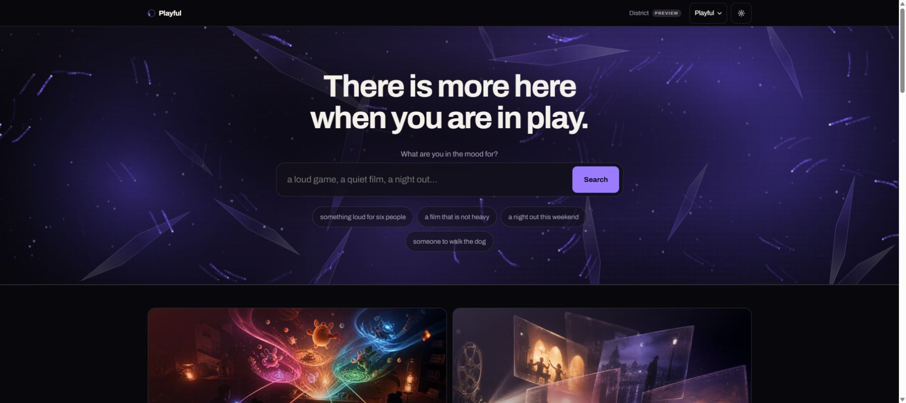
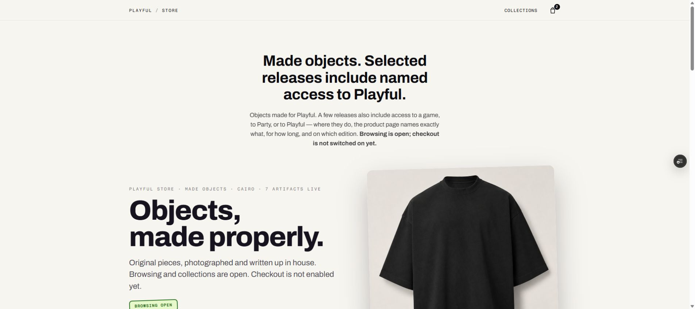
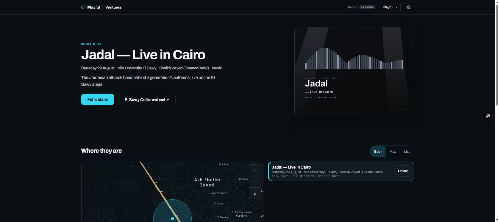
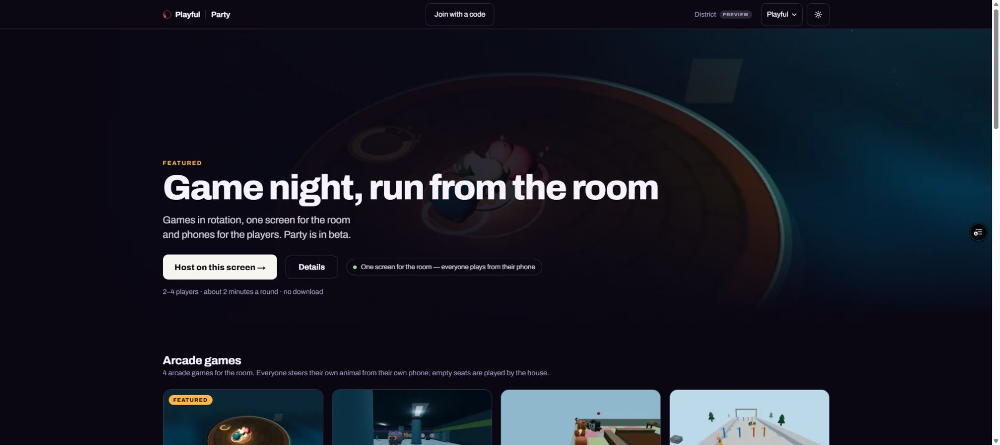
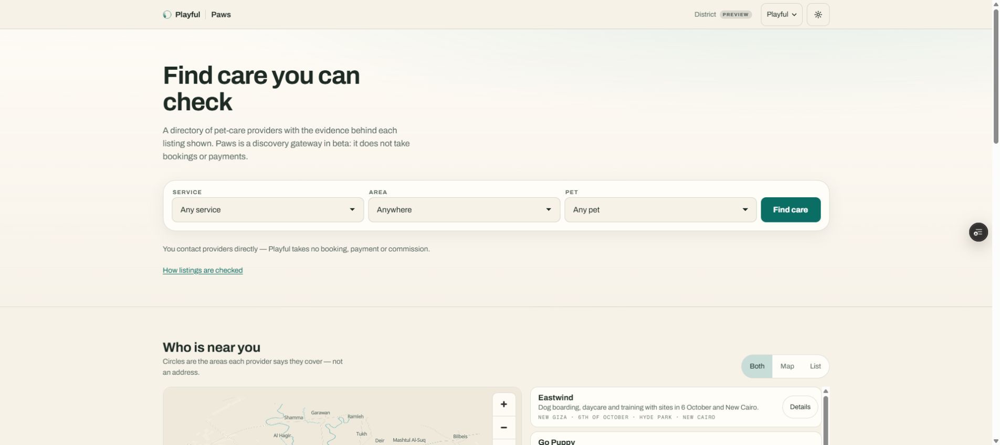
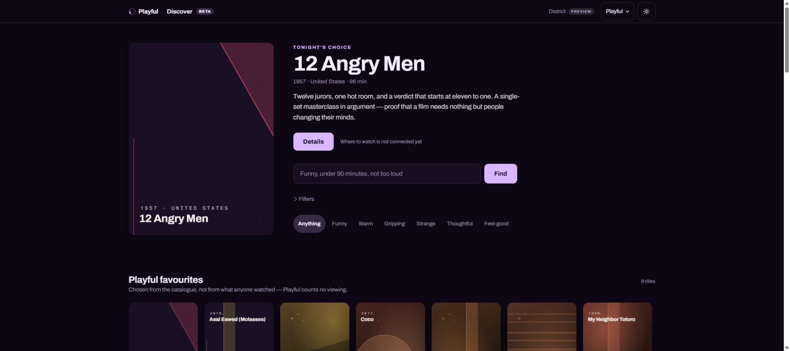
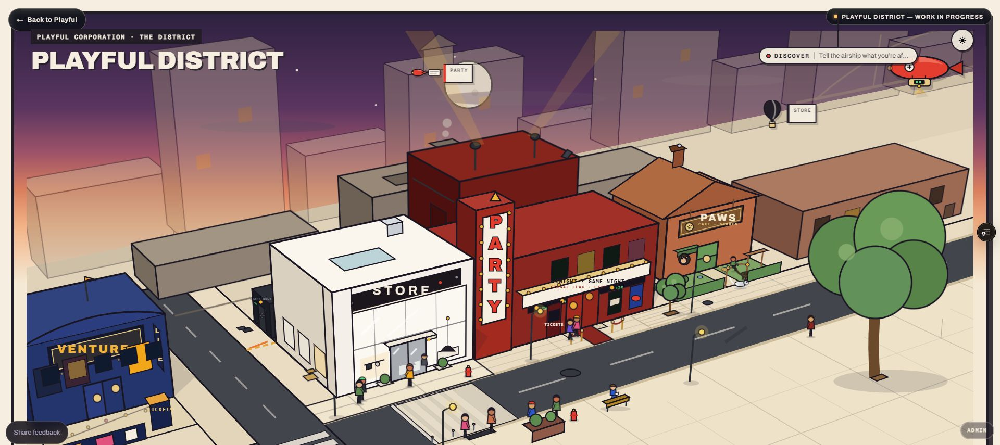
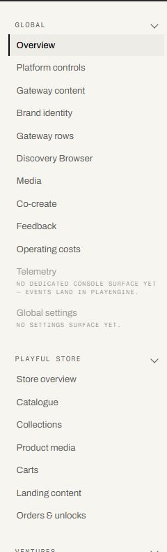

One place for things worth finding, making, playing, and joining.
The umbrella is discovery. Each product door serves a different job without losing the same point of view.
Playful / Self-initiated / AI-assisted product building / 2026
Playful became my live laboratory for product strategy, systems design, technical architecture, and AI-assisted implementation. I directed the work from concept through production review, including the operational surfaces that keep five public products coherent.

01 / Executive summary
Playful started as an exploration of what I could build with AI coding tools. It quickly exposed a more useful question: could I direct those tools with enough product discipline to create multiple connected experiences, preserve clear public boundaries, and operate the result without pretending unfinished capabilities were live?
The umbrella is discovery. Each product door serves a different job without losing the same point of view.
Identity, media, telemetry, permissions, and operations are shared. The customer experience remains specific to each context.
I had to inspect states, data contracts, permissions, copy, responsive behavior, and production truth, not simply accept generated code.
Store browsing is open while checkout is off. Paws takes no booking or payment. Discover says viewing availability is not connected yet.
02 / Product portfolio
The portfolio is connected by a shared discovery model, not by making every experience look the same. Each door has its own interaction logic, data needs, trust boundary, and operating workflow.
A browse-first catalogue with collections, product stories, cart behavior, digital ownership grants, claim recovery, and a founder-only checkout lab while public payment remains off.
A curated events surface with geographic context, verified details, and a direct path to the venue or ticket source. Playful sells no tickets and takes no commission.
Browser-based game nights using one shared screen and player phones as controllers, with arcade and talking games, room identity, versioned packages, and hosting states. Party is in beta.
A pet-care directory that shows the evidence behind each listing, service areas, freshness, and direct contact. It deliberately avoids booking and payment claims.
A mood-led film and series catalogue that explains why something fits. The beta is explicit that viewing availability is not connected yet.
A visual map makes the portfolio legible to visitors. A separate founder console manages public state, content, media, catalogues, events, game generations, provider freshness, feedback, and operating costs.
03 / Product evidence
These screens are from the live product on 28 August 2026. They show different product models sharing a recognizable voice without collapsing into one template.






04 / Architecture
The technical model follows the product model. A Next.js App Router application sits over one Supabase Postgres instance, with schemas separated by domain: core, style, ventures, party, paws, discovery, playengine, and admin. Shared identity, media, tags, locations, audit logs, and analytics avoid repeated foundations while domain tables preserve clear ownership.
Customer identity, operator access, and platform permissions are treated as product states, not invisible infrastructure.
Orders, ownership changes, catalogues, event intake, provider freshness, and game generations can be inspected and managed.
Versioned game packages and room state support multiple games while keeping promotion and rollback visible to the operator.
A disabled checkout, beta content source, or external ticket path is named directly instead of being disguised as completeness.
05 / AI-assisted method
I used Claude and ChatGPT as implementation collaborators, but kept the product decisions explicit. The repeatable unit was not “ask for a page.” It was frame a decision, define the contract, build one vertical slice, inspect the result, and update the source of truth.
Every build starts with the customer job, operating owner, public promise, and what must remain off.
Routes, states, data ownership, permissions, failure paths, and acceptance checks give the AI collaborator less room to invent.
UI, data, admin control, empty state, and responsive behavior move together before the pattern is repeated.
I compare code, database behavior, browser output, console state, accessibility, and public copy before accepting the work.
When shipped behavior changes, the route contract, schema notes, verification scripts, and operational guidance have to change with it.
06 / Operating the system
The console answers a practical question: what needs attention today? It surfaces public platform state, catalogue readiness, media gaps, carts and orders, unlock grants, event intake, map coverage, game generations, package budgets, provider freshness, feedback, and the real cost of keeping the platform online.

07 / What I learned
Explicitly closing checkout or booking can be the strongest product decision when the operational system is not ready.
Faster implementation means more time must go into state coverage, permissions, data integrity, performance, accessibility, and live review.
Shared primitives reduce duplication, but clear domain ownership prevents an expanding platform from becoming an untraceable schema.
Admin controls, audit trails, freshness rules, rollback, and diagnostics are part of the user experience even when customers never see them.
I remain accountable for the brief, tradeoffs, evidence, review depth, and public claim made by the shipped product.
The work combines interaction quality with prioritization, system boundaries, delivery sequencing, operational readiness, and technical fluency.
08 / Current evidence
Counts and screenshots were verified on the live product on 28 August 2026. Store checkout remains off publicly. Paws does not take bookings or payments. Party is in beta. Discover is in beta and does not yet connect viewing availability. These limits are part of the product evidence, not footnotes hidden from it.